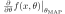
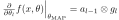
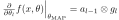

, a pre-trained network and the network function
,
the GLM predictive is given by
, a pre-trained network and the network function
,
the GLM predictive is given by Romie Banerjee
Keywords: Bayesian neural network, Laplace Approximation, Kronecker factorization, monte-carlo sampling, Generalized linear model
Given pre-trained model, one can bayesianify it by Laplace Approximation. This additional structure makes the model probabilistic and outputs predictive distributions (instead of point-set predictions). There two components of going from a pre-trained model to probabilistic predictions using Laplace, are as follows:
The posterior is approximated by a Gaussian using Laplace Approximation, which reduces to calculating the Hessian of the loss function of the network, i.e. the second order information of the loss landscape. The Hessian is further simplified by the Generalized-Gauss-Newton (GGN) approximation, this reduces the second order calculation to a product of first-order calculations. In practice this is realized as the empirical fisher of the model. The kronecker-factored-approximate-curvature (KFAC) uses layer-wise kronecker factorization of the empirical fisher.
The predictive admits no simple closed form formula since the feed-forward function is not explicit. So we estimate it, either directly by monte-carlo sampling from the posterior and then applying feed-forward, or by linearizing the feed-forward function (linearized Laplace).
Estimating the GLM predictive
Given an input , a pre-trained network and the network function
,
the GLM predictive is given by
 is the jacobian of the function
w.r.t.
is the jacobian of the function
w.r.t.  at .
While the covariance is computed offline (same for all inputs ), the jacobian must be computed online. This is expensive when
is high-dimensional.
at .
While the covariance is computed offline (same for all inputs ), the jacobian must be computed online. This is expensive when
is high-dimensional.
We introduce a Monte-carlo estimator for the GLM predictive obtained through sampling from the Gaussian posterior.
The jacobian gets replaced by a low-rank and base-changed version and the predictive covariance is estimated as
The columns of are the directional derivatives of
along the monte-carlo sample directions, and are approximated numerically.
Unlike the rows of which are gradients of the same functions (along standard basis dimensions of the model weight space) and are calculated with symbolic differentiation.
This makes computation less reliable on repeated backprop calls (for a single ) and can be possibly parallelized (due to the fixed sample size).
We also derive convergence properties of this estimator and discuss bounds for optimal number of samples.
A Bayesian neural network (BNN) consists of a (differentiable) map
, where the spaces  ,
,  and and are respectively the input, model weights and output spaces. The spaces are isomorphic as affine spaces to
,
and
. The mapping
expresses the evaluation of a model on the input . (Note: In this formulation, the aleatoric predictive is suppressed by considering on point-valued functions .). In this setup, a regular feed-forward network is a BNN with a fixed choice of weights, for example
. We can denote the resulting network as a function
,
.
The weights space is equipped with a probability measure, the posterior distribution (usually intractable)
. The mode of the posterior,
and and are respectively the input, model weights and output spaces. The spaces are isomorphic as affine spaces to
,
and
. The mapping
expresses the evaluation of a model on the input . (Note: In this formulation, the aleatoric predictive is suppressed by considering on point-valued functions .). In this setup, a regular feed-forward network is a BNN with a fixed choice of weights, for example
. We can denote the resulting network as a function
,
.
The weights space is equipped with a probability measure, the posterior distribution (usually intractable)
. The mode of the posterior,
| (1) |
The predictive distribution on the output space is the push-forward probability measure of under the map .
| (2) |
The (bayesian) prediction is the mean of , i.e.
| (3) |
The predictive uncertainty is the (co)variance of the predictive distribution , i.e.,
| unc cov cov | (4) |
| (5) |
| (6) |
One successful method following this principle is MCDropout [2,1], where the posterior is estimated by variational inference on Bernoulli distributions. One disadvantage of the MC sampling method is that it is not post-hoc as the estimated is an predictive for the Bayesian prediction which in general does not equal to the original MAP prediction .
| (7) |
This is second-order derivative calculation is often replaced in practice by the products of first-order derivatives , i.e. Generalized-Gauss-Newton approximation or equivalently the Fisher information matrix; the covariance of the gradients of the loss function at the empirical risk minimizer .
| (8) |
([3]) Define the generalized linear model by linearizing the BNN at (via. Taylor series)
![$\displaystyle f_{\text{lin}}(x, \theta) = f(x, \theta_{\text{MAP}}) + \left[\le...
...ght\vert_{\theta_{\text{MAP}}}\right] \left(\theta - \theta_{\text{MAP}}\right)$](img52.svg) |
(9) |
Denote the jacobian matrix
 by
. Replace the posterior distribution
by the Laplace approximation
. The GLM predictive distribution
on the output space is defined to be the push-forward measure of the Laplace posterior
on the weight space under the map
. Since
is affine on , the predictive distribution
is normal.
The mean and covariance of the normal distribution are as follows
![$\displaystyle \mathbb{E}_{y \sim P_{\text{lin}}(y\vert x)}[y]$](img60.svg) |
|||
| cov |  cov cov |
||
| cov |
|||
| cov |
|||
This property makes GLM suitable for post-hoc predictive estimation as the Bayesian prediction which is simply the mean of the predictive distribution, agrees with the original prediction from the model .
| (10) |
The predictive at this point further has a simple analytical formula,
([6,7]) The FI matrix has a very large size . For practical applications various approximations of are available. The KFAC method employs two levels of approximation
 -th layer and,
. This reduces the size of from to
.
-th layer and,
. This reduces the size of from to
.
 is the otgoing gradient of layer . The Fisher information block for layer is then
. The KFAC method makes the approximation
. Here
and
and the -th layer is a map
. This reduces the size from
to
.
is the otgoing gradient of layer . The Fisher information block for layer is then
. The KFAC method makes the approximation
. Here
and
and the -th layer is a map
. This reduces the size from
to
.
In order to use this during inference one needs access two matrices,
)
, which must be computed for every input .
Using the given co-ordinatization
of , the entries of the jacobian matrix are (13), where
is short for
, and
are the scalar components of . The rows are the gradients of the scalar valued functions
.
During inference time these rows can be computed using back-propagation. This would require  back-propagation steps, one for each scalar value of .
back-propagation steps, one for each scalar value of .
When the covariance is expressed in Kronecker factored form the GLM uncertianty expression must be
where is the jacobian in a kronecker-factored form.
When  , i.e.
is scalar valued, consider the jacobian
. For every layer
, the layerwise derivative has a kronecker decomposition
, where
is the incoming activation and
the outgoing gradient for layer . This gives a decomposition of the jacobian into blocks.
, i.e.
is scalar valued, consider the jacobian
. For every layer
, the layerwise derivative has a kronecker decomposition
, where
is the incoming activation and
the outgoing gradient for layer . This gives a decomposition of the jacobian into blocks.
where the superscript . Finally the GLM-predictive calculation,
| Diag |
(15) |
The GLM uncterianty term 11 can be estimated by computing sample covariance,
| cov |
|||
 can be interpreted as members of the tangent space
, and the terms in the summand, are simply the directional derivatives
.
can be interpreted as members of the tangent space
, and the terms in the summand, are simply the directional derivatives
.
The MC-GLM method to estimate predictive is the following:
The Cholesky decomposition
lets us write the predictive
as
, where
. The matrix is simply the jacobian base-changed to the a new basis formed out of the columns of .
From this point of view the idea of MC-GLM is to base-change using a different and low-rank basis for
 , obtained by sampling.
, obtained by sampling.
In order to generate a sample from a  -variable normal
one has to write it as
, where is a matrix such that
and
. The matrix can be found using Cholesky decomposition and is guaranteed when is a covariance. (Notation:
ch.)
-variable normal
one has to write it as
, where is a matrix such that
and
. The matrix can be found using Cholesky decomposition and is guaranteed when is a covariance. (Notation:
ch.)
When the covariance is in KFAC form as in 12, we observe that the cholesky decomposition commutes with block-diagonal, inverse and kronecker product. Consequenty the Cholesky is computed as a block diagonal matrix with the blocks
ch ch along the diagonal.
For every layer , let
be the restriction of
restricted to weights of
.The layer-wise sample obtained as
| ch.reshape |
This document was generated using the LaTeX2HTML translator Version 2024 (Released January 1, 2024)